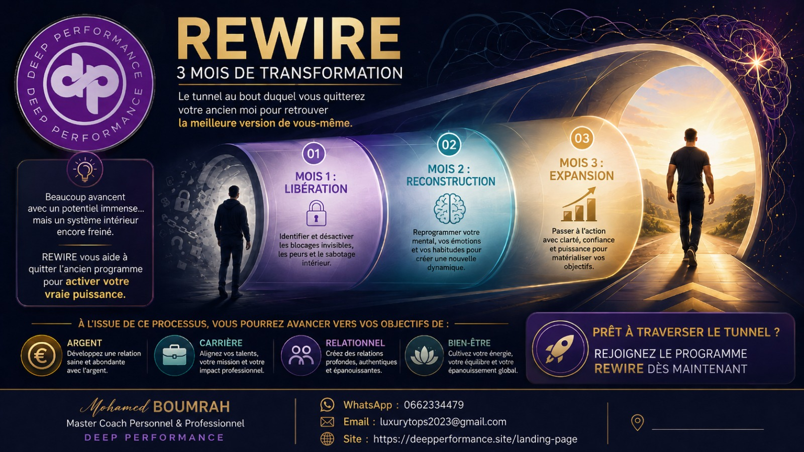
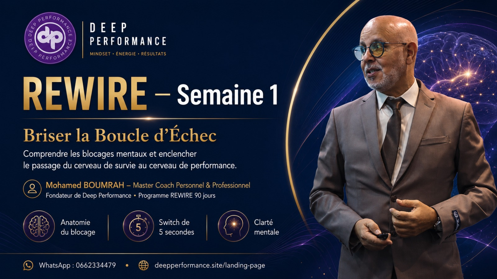
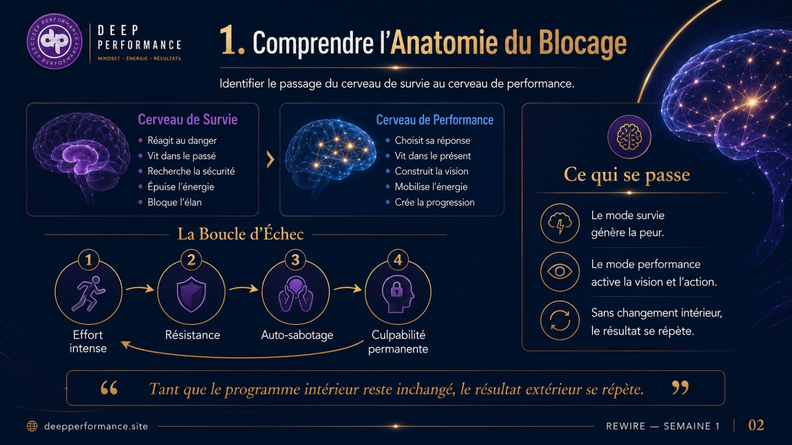
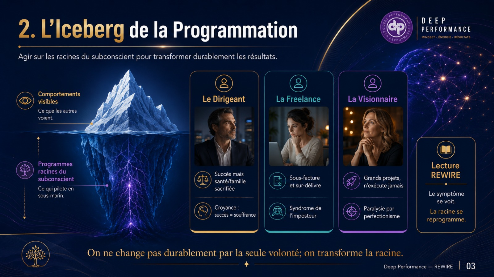
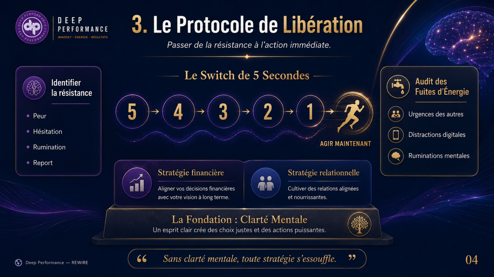
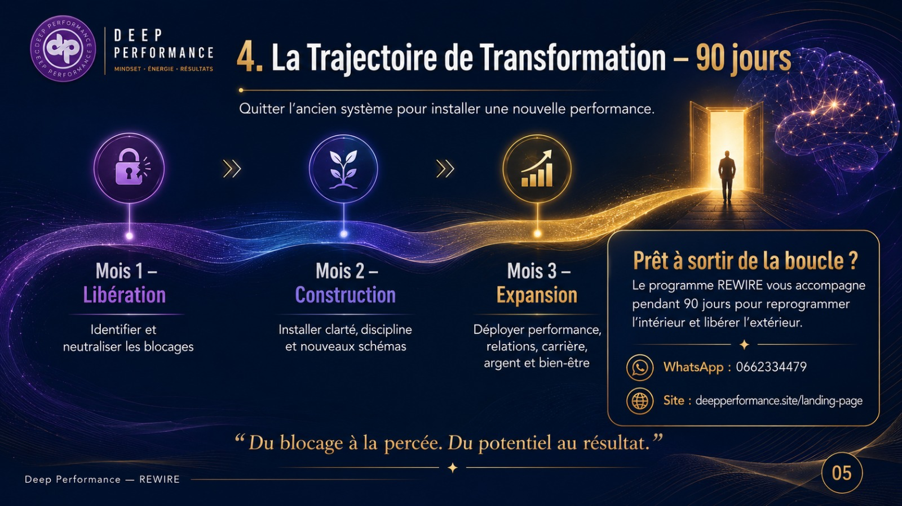
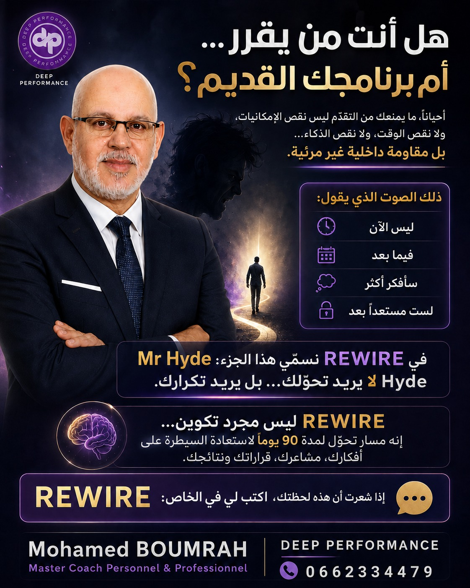

Douter de soi
Les décisions deviennent lourdes, lentes et chargées de peur.
Masterclass gratuite
Si vous avez l’impression de stagner malgré vos efforts, le problème peut venir de votre programmation mentale. Cette masterclass vous aide à comprendre ce qui influence vos décisions, vos comportements et vos résultats.

Vidéo principale
Commencez par cette vidéo courte pour comprendre le blocage, la programmation mentale et la direction proposée par la masterclass.
Le vrai problème
Beaucoup de personnes essaient de changer leur vie avec plus de motivation, plus d’efforts ou plus de pression. Mais si les schémas profonds restent identiques, les décisions et les comportements reviennent au même point.
Le changement commence de l’intérieur : votre manière de penser, de réagir, de choisir et de vous positionner.
Impact au quotidien
Les décisions deviennent lourdes, lentes et chargées de peur.
L’esprit reste en alerte et consomme votre énergie avant même l’action.
Les mêmes dynamiques reviennent, même avec de nouvelles personnes.
Les efforts ne se transforment pas encore en progression stable.
Qui accompagne
Mohamed est spécialisé en reprogrammation mentale et transformation personnelle. Son objectif est simple : vous aider à reprendre le contrôle de votre vie de l’intérieur.
Programme 90 jours
Comprendre les habitudes mentales qui alimentent le blocage.
Remplacer les réactions automatiques par une direction plus consciente.
Construire une progression visible dans les choix, les actions et les résultats.
Affiches et supports

La galerie commence par l’affiche REWIRE Semaine 1, puis suit les supports numérotés dans l’ordre : 1, 2, 3 et 4. Les visuels de présentation générale et le portrait du coach sont placés après.
Voir le texte original




Avis clients
Places limitées
Avant d’intégrer le programme, commencez par clarifier ce qui vous bloque réellement. Cette première étape vous donne une direction concrète.
Questions fréquentes
Oui, si vous vous sentez bloqué et souhaitez un changement profond.
Non. Le programme est accessible à toute personne prête à travailler sur elle-même.
Le programme dure 90 jours avec un accompagnement structuré.
Un suivi régulier permet d’observer les changements et d’ajuster les actions.
Commencez simplement par participer à la masterclass gratuite.